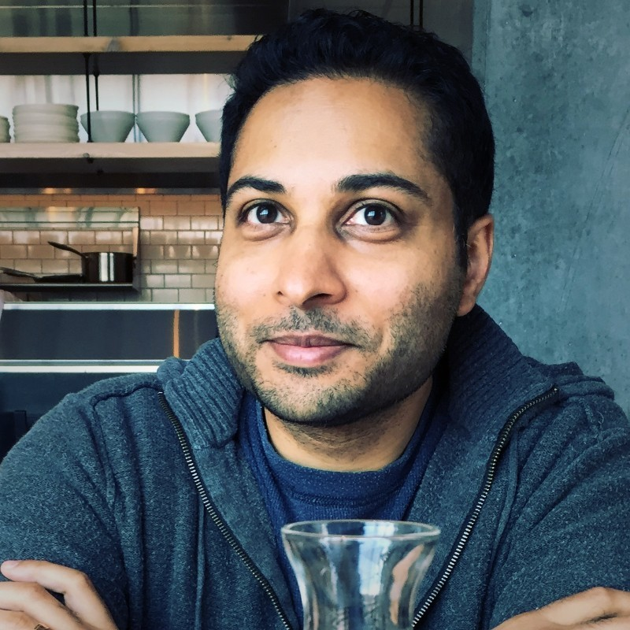

|

Reston, VA email: svattikuti@cittatech.org >CV Github |
I am a data scientist and computational biologist. My interests are generative modeling at multiple levels of description (statistical, physical, mechanistic). My pet project is modeling cognition and devising measurement tools for tracking "states-of-mind" (Sanskrit - citta). (More to come on this. I was fortunate to be a speaker on this at IPAM, NIMH, and SIAM LS. Thank you to my colleagues.) I am interested in modeling in general. I gave some didactic talks (for my own edification) in finance (MPT) and causal modeling (on Judea Pearl), and worked on a short IMF-World Economic Outlook challenge. I was fortunate to work with great teams on Bayesian COVID pandemic modeling, and Bayesian claims analyses. I am interested in new collaborative opportunities. |